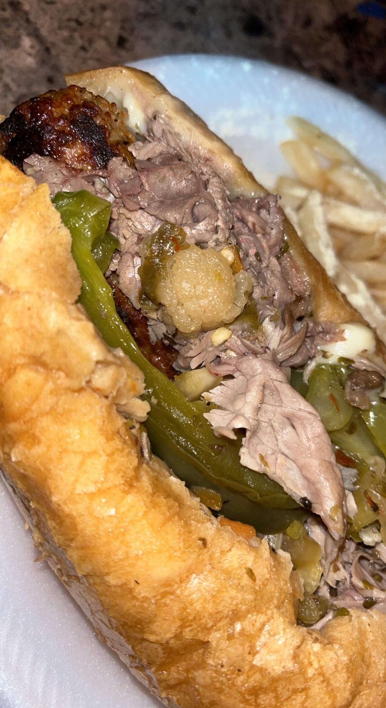
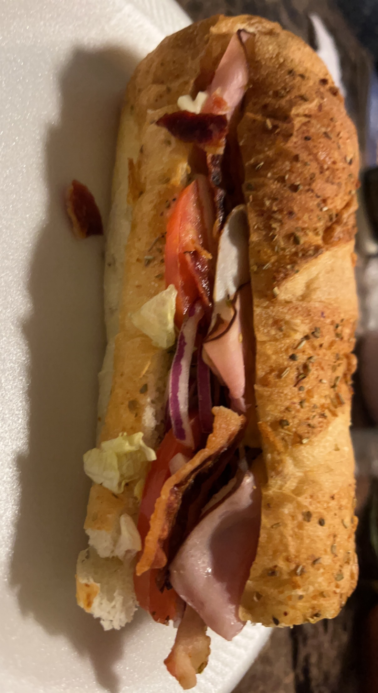
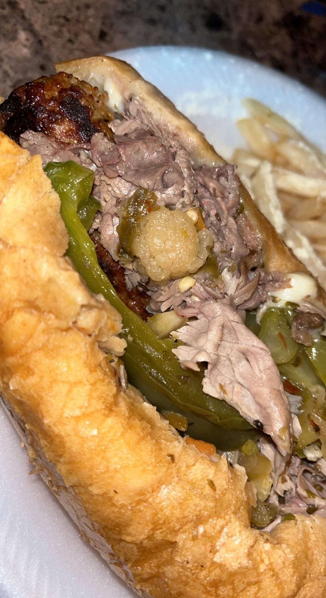
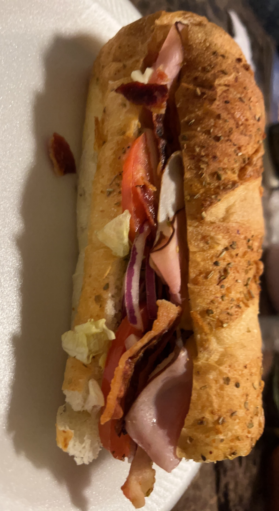

These are just some images that I've been working on. As well as projects that I've done in the past. The first project is about me being creative on the placement of food. The idea of being playful. Restaurant food and homemade food is just food that I had taken photos of. The beauty in the photos of being up-close is very special to me because I feel the people should look at food up close, you can see every little detail, wheather it's nasty or not. I'M A FOODIE, I LOVE FOOD!! I can't stress that enough. This is just a sample of what I've done.
Link to Homepage! 


